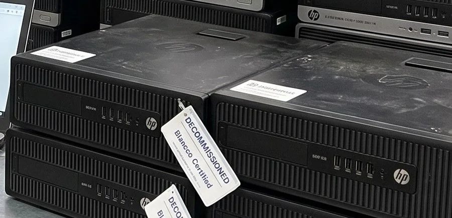
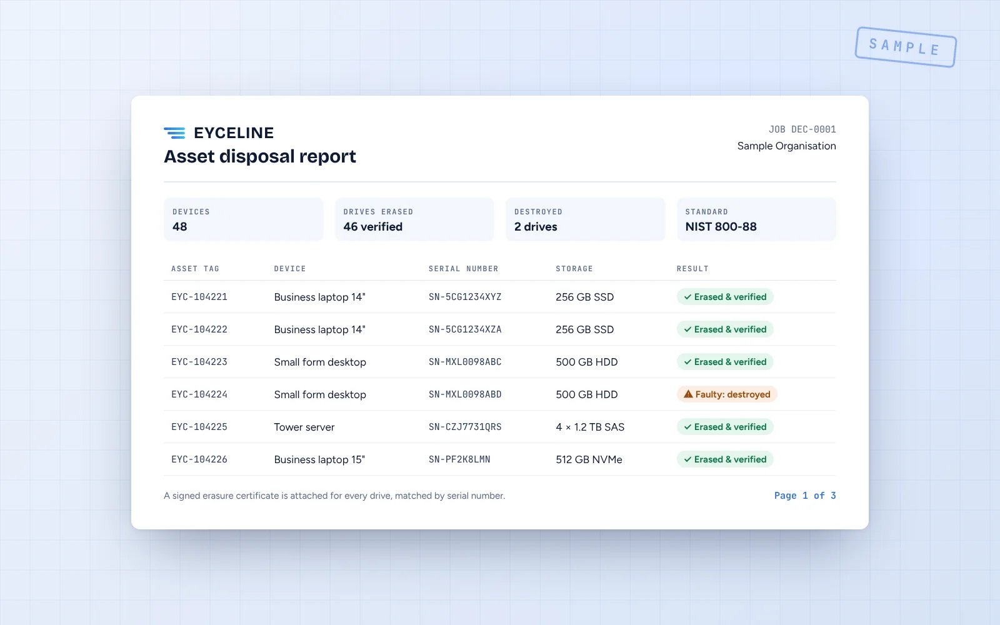
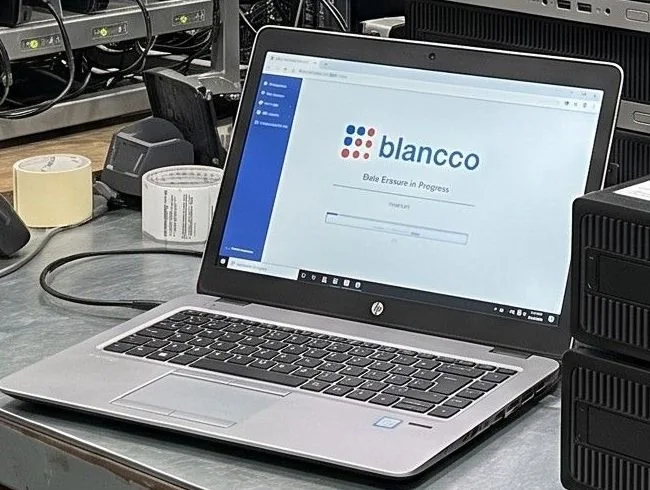

01 / 06 · IT asset disposition
Collection from your site
Darwin & the Northern Territory
From a single office refresh to a whole fleet, we pick your equipment up and log every item as it leaves.
- Collection from your site in Darwin and around the Territory.
- Every item is recorded as it's loaded, so nothing goes missing between your door and our workshop.
- You deal with the same person from the first call to the final report.

02 / 06 · IT asset disposition
Every device tagged and tracked
Asset tags
Each device gets its own barcode asset tag, tied to its make, model and serial number.
- Scan a tag and see exactly where that device is up to.
- Drives are tracked by serial number too, even after they come out of the machine.

03 / 06 · IT asset disposition
Decommissioning in batches
How a job is run
Equipment is processed in batches, so a whole job can be followed from pickup to final sign-off.
- Each job has its own number, with every device in it listed.
- You can ask where your job is up to at any time.
- Large fleets move quickly through dedicated erasure racks.

04 / 06 · IT asset disposition
Audit-ready reports
At the end of every job
A clear report of every device collected and what happened to it, ready for your records and your auditors.
- Device, serial number, storage and result on one line each.
- A signed erasure certificate for every drive, matched by serial number.
- Drives that couldn't be wiped are listed as destroyed, so every one is accounted for.
05 / 06 · IT asset disposition
Reuse first
Less waste, lower cost
Equipment that still has life in it is refurbished and resold, which can offset the cost of the job.
- Every drive is wiped and certified before anything is resold.
- Good hardware stays in use instead of going to landfill.
- What can't be reused is recycled responsibly.

06 / 06 · IT asset disposition
Four steps, fully documented
The decommissioning process
Simple for you, thorough behind the scenes.
- Collect & tag. We pick up your equipment and record every serial number and asset tag.
- Erase. Drives are wiped with Blancco, overwriting every sector and verifying the result.
- Certify. You receive an erasure certificate for each device, matched to your asset list.
- Sign-off. A final summary of every device collected and erased, for your records and auditors.
